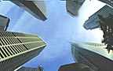

Public Appeal
We must make the World Public. The time of Nations, and Corporations, and Private control of Public Power must come to a close. "Government" must no longer be a foundation for separation of the people of the World, or subjugation of one people by another, or war and massacare between peoples, or hate and intollerance of different ways of living. "Government" must become internalized in each of us, so that no central power is needed or can become corrupt. This will be the hardest but most rewarding challenge of humanity. When one of us falls out of this state, our community must not give sanction to their actions, but at the same time must help them to rebuild their dignity so that they may again rule their self.
We must make the World Free. Those things which do not need to cost should not be charged for. We must replace "cost" with "gift", "works" with "creations". In the same way that Linux can replace Microsoft Windows, other free things must replace, and then surpass, costly things. This seems to be completely possible in the world of ideas. And perhaps if we make free our ideas, then we will even have made significant progress at making our ways of physical living free as well.
We must make the World Open. When we create ideas, be it software, music, literature, scientific research, we must give them to each other free and in full: not only the final product of the ideas, but as much of their process as possible. This ensures that others have a fertile source to extend those ideas.
We must make the World Equitable. When a great achievment is made it must finally be measured by how many its fruit is shared with. Our ideas are infinite, and should not be horded. The finite resources of our physical world require a true science of economics, one with the factual certainty of mathematics or physics. Upon this understanding of economics, we will distribute our physical resources according to our best sense of a Free, Open, Equitable Public.